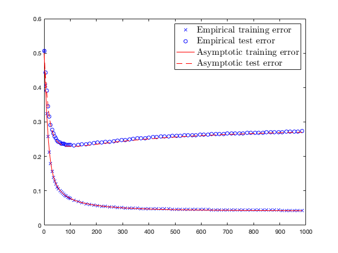
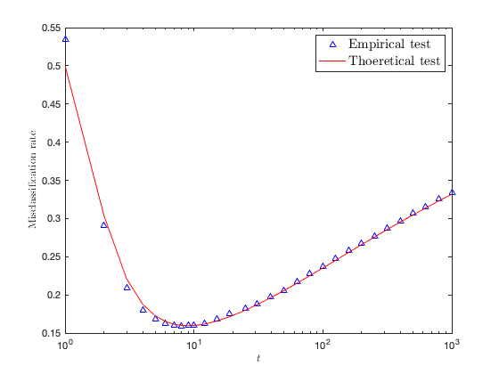

Section 5.2: Gradient descent dynamics in learning linear neural networks
This page contains simulations in Section 5.2.
Contents
Training and test error rates as a function of the training time
close all; clear; clc p = 256; n = 512; n_test = n; c = p/n; mu = [-ones(p/2,1);ones(p/2,1)]/sqrt(p); norm_mu2 = norm(mu)^2; gamma = 0; % regularization penalty t_max = 1000; alpha = 1e-2; sigma2_init = 0.1; w_init = sqrt(sigma2_init)*randn(p,1)/sqrt(p); cs = [1/2 1/2]; lambda_s = c + 1 + norm_mu2 + c/norm_mu2; % Theory tolerance = eps; f = @(x,t) exp(-alpha.*x.*t); omega = @(x) sqrt(4*c*x - (1-c-x).^2)./(lambda_s-x)/2/pi; nu = @(x) sqrt(4*c*x - (1-c-x).^2)./(2*pi*c*x); E_test_func = @(x,t) (1 - f(x+gamma,t))./(gamma+x).*omega(x); E_test = @(t) integral( @(x)E_test_func(x,t), (1-sqrt(c))^2+tolerance, (1+sqrt(c))^2-tolerance) + max(norm_mu2^2-c,0)/norm_mu2*(1 - f(lambda_s+gamma,t))./(lambda_s+gamma); V_test_func1 = @(x,t) (1 - f(x+gamma,t)).^2./((x+gamma).^2).*omega(x); V_test_func2 = @(x,t) (f(x+gamma,t)).^2.*nu(x); V_test = @(t) (norm_mu2+c)/norm_mu2*( integral( @(x)V_test_func1(x,t), (1-sqrt(c))^2+tolerance, (1+sqrt(c))^2-tolerance) + max(norm_mu2^2-c,0)/norm_mu2*(1 - f(lambda_s+gamma,t)).^2./((lambda_s+gamma).^2)) + sigma2_init*(integral( @(x)V_test_func2(x,t), (1-sqrt(c))^2+tolerance, (1+sqrt(c))^2-tolerance) + max(1-1/c,0)*f(gamma,t).^2 ); E_train = @(t) (norm_mu2+c)/norm_mu2*E_test(t); V_train_func1 = @(x,t) x.*(1 - f(x+gamma,t)).^2./((gamma+x).^2).*omega(x); V_train_func2 = @(x,t) x.*(f(x+gamma,t)).^2.*nu(x); V_train = @(t) (norm_mu2+c)/norm_mu2*( integral( @(x)V_train_func1(x,t), (1-sqrt(c))^2+tolerance, (1+sqrt(c))^2-tolerance) + max(norm_mu2^2-c,0)/norm_mu2*lambda_s*(1 - f(lambda_s+gamma,t)).^2./((lambda_s+gamma).^2)) + sigma2_init*(integral( @(x)V_train_func2(x,t), (1-sqrt(c))^2+tolerance, (1+sqrt(c))^2-tolerance) ) - E_train(t).^2 ; store_theory = zeros(t_max, 2); for t=1:t_max store_theory(t,1) = qfunc(E_train(t-1)/sqrt(V_train(t-1))); % train theory store_theory(t,2) = qfunc(E_test(t-1)/sqrt(V_test(t-1))); % test theory end % Empirical nb_data_loop = 50; store_perf = zeros(t_max, nb_data_loop, 2); for data_loop = 1:nb_data_loop y = [-ones(n*cs(1),1); ones(n*cs(2),1)]; X = mu*(y') + randn(p,n); y_test = [-ones(n_test*cs(1),1); ones(n_test*cs(2),1)]; X_test = mu*(y_test') + randn(p,n_test); w = w_init; for t = 1:t_max store_perf(t,data_loop,1) = 1 - sum( sign(X'*w)==y )/n; % training error rate store_perf(t,data_loop,2) = 1 - sum( sign(X_test'*w)==y_test )/n_test; % test error rate w = gd(w, X, y, gamma, alpha, 1); end end time = 0:t_max-1; time_index =[1:5:100,101:15:t_max]; time = time(time_index); figure plot(time, mean(store_perf(time_index,:,1),2), 'bo'); hold on plot(time, mean(store_perf(time_index,:,2),2), 'bx'); plot(time, store_theory(time_index,1),'r-') plot(time, store_theory(time_index,2),'r--') xlabel('$t$','Interpreter', 'latex'); ylabel('Misclassification rate','Interpreter', 'latex'); legend('Empirical training', 'Empirical test', 'Theoretical training', 'Theoretical test', 'FontSize', 15, 'Interpreter', 'latex')
Test performance with zero and positive regularizations
close all; clear; clc p = 512; n = 512; n_test = n; c = p/n; mu = [sqrt(2);zeros(p-1,1)]; norm_mu2 = norm(mu)^2; gamma = 0; % regularization penalty t_max = 1000; alpha = 1e-1; sigma2_init = .1; w_init = sqrt(sigma2_init)*randn(p,1)/sqrt(p); cs = [1/2 1/2]; y_test = [-ones(n_test*cs(1),1); ones(n_test*cs(2),1)]; X_test = mu*(y_test') + randn(p,n_test); lambda_s = c + 1 + norm_mu2 + c/norm_mu2; % Theory tolerance = eps; f = @(x,t) exp(-alpha.*x.*t); omega = @(x) sqrt(4*c*x - (1-c-x).^2)./(lambda_s-x)/2/pi; nu = @(x) sqrt(4*c*x - (1-c-x).^2)./(2*pi*c*x); E_test_func = @(x,t) (1 - f(x+gamma,t))./(gamma+x).*omega(x); E_test = @(t) integral( @(x)E_test_func(x,t), (1-sqrt(c))^2+tolerance, (1+sqrt(c))^2-tolerance) + max(norm_mu2^2-c,0)/norm_mu2*(1 - f(lambda_s+gamma,t))./(lambda_s+gamma); V_test_func1 = @(x,t) (1 - f(x+gamma,t)).^2./((x+gamma).^2).*omega(x); V_test_func2 = @(x,t) (f(x+gamma,t)).^2.*nu(x); V_test = @(t) (norm_mu2+c)/norm_mu2*( integral( @(x)V_test_func1(x,t), (1-sqrt(c))^2+tolerance, (1+sqrt(c))^2-tolerance) + max(norm_mu2^2-c,0)/norm_mu2*(1 - f(lambda_s+gamma,t)).^2./((lambda_s+gamma).^2)) + sigma2_init*(integral( @(x)V_test_func2(x,t), (1-sqrt(c))^2+tolerance, (1+sqrt(c))^2-tolerance) + max(1-1/c,0)*f(gamma,t).^2 ); E_train = @(t) (norm_mu2+c)/norm_mu2*E_test(t); V_train_func1 = @(x,t) x.*(1 - f(x+gamma,t)).^2./((gamma+x).^2).*omega(x); V_train_func2 = @(x,t) x.*(f(x+gamma,t)).^2.*nu(x); V_train = @(t) (norm_mu2+c)/norm_mu2*( integral( @(x)V_train_func1(x,t), (1-sqrt(c))^2+tolerance, (1+sqrt(c))^2-tolerance) + max(norm_mu2^2-c,0)/norm_mu2*lambda_s*(1 - f(lambda_s+gamma,t)).^2./((lambda_s+gamma).^2)) + sigma2_init*(integral( @(x)V_train_func2(x,t), (1-sqrt(c))^2+tolerance, (1+sqrt(c))^2-tolerance) ) - E_train(t).^2; %+ max(1-1/c,0)*0.*f(gamma,t).^2 store_theory = zeros(t_max, 2); for t=1:t_max store_theory(t,1) = qfunc(E_train(t-1)/sqrt(V_train(t-1))); % train theory store_theory(t,2) = qfunc(E_test(t-1)/sqrt(V_test(t-1))); % test theory end % Empirical nb_data_loop = 50; store_perf = zeros(t_max, nb_data_loop, 2); for data_loop = 1:nb_data_loop y = [-ones(n*cs(1),1); ones(n*cs(2),1)]; X = mu*(y') + randn(p,n); y_test = [-ones(n_test*cs(1),1); ones(n_test*cs(2),1)]; X_test = mu*(y_test') + randn(p,n_test); w = w_init; for t = 1:t_max store_perf(t,data_loop,1) = 1 - sum( sign(X'*w)==y )/n; % training error rate store_perf(t,data_loop,2) = 1 - sum( sign(X_test'*w)==y_test )/n_test; % test error rate w = gd(w, X, y, gamma, alpha, 1); end end time = 1:t_max; time_index =[1:9,floor(10.^(1:.1:3))]; time = time(time_index); if gamma==0 figure semilogx(time, mean(store_perf(time_index,:,2),2), 'b^'); hold on semilogx(time, store_theory(time_index,2),'r-') elseif gamma==0.1 figure semilogx(time, mean(store_perf(time_index,:,2),2), 'bx'); hold on semilogx(time, store_theory(time_index,2),'r--') end xlabel('$t$','Interpreter', 'latex'); ylabel('Misclassification rate','Interpreter', 'latex'); legend('Empirical test', 'Thoeretical test', 'FontSize', 15, 'Interpreter', 'latex'); % FUNCTIONS function w_new = gd(w0, X, y, gamma, step, nb_step) [p,n] = size(X); w_tmp = w0; while nb_step > 0 g = (X*X'/n + gamma*eye(p))*w_tmp - X*y/n; % take gradient step w_new = w_tmp - step*g; % check step if ~isfinite(w_new) error('gradient is inf or NaN') end nb_step = nb_step-1; w_tmp = w_new; end end